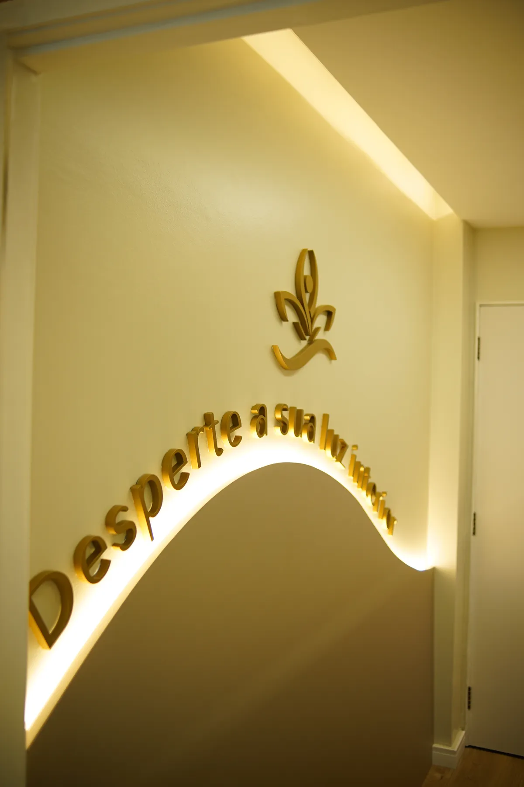
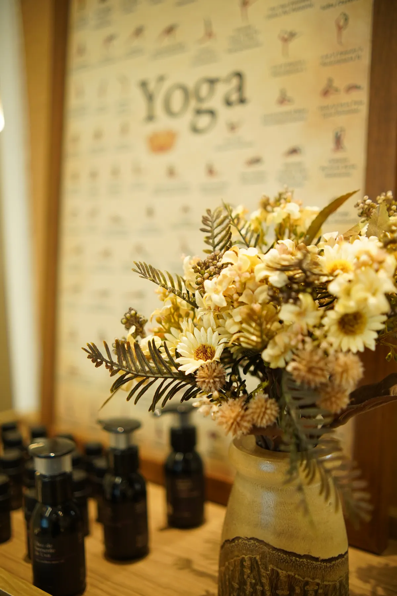
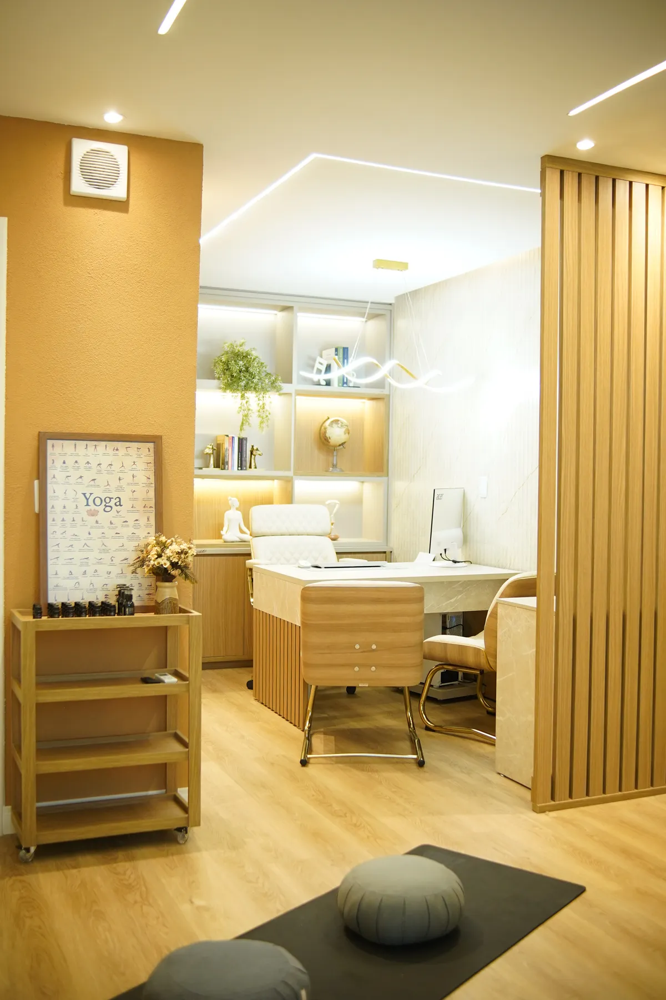

Saúde da Mulher sob um
Olhar Integrativo
Reconexão de corpo e mente. Um cuidado além do convencional.
Sobre Mim
Sou a Dra. Kerly Helena, médica ginecologista. Acredito em ir muito além do sintoma.
Muitas pacientes chegam com exames "normais", mas sentem-se exaustas e ansiosas. Na medicina integrativa encontrei uma forma mais acolhedora de tratar você.
Investigo as reais causas dos seus sintomas para devolver o seu equilíbrio hormonal, metabólico e emocional.
"Acredito que saúde não é pressa — é presença.
É escuta atenta."
Meu propósito é melhorar sua qualidade de vida, não apenas os seus exames.
A abordagem integrativa
Cuidamos de você por inteiro.
Não focamos apenas no sintoma: avaliamos o seu corpo, a sua mente, os seus hormônios e o seu estilo de vida como um sistema interligado.
"Muitos sintomas são desequilíbrios profundos que exames isolados não mostram."
Em uma consulta detalhada, investigamos profundamente e avaliamos:
Avaliação detalhada dos eixos feminino, tireoidiano e adrenal. Buscamos o equilíbrio natural para vitalidade, libido e regulação do ciclo menstrual.
O sono é o pilar da recuperação celular. Investigamos distúrbios e aplicamos estratégias para um descanso profundo e restaurador.
A nutrição funcional como aliada no tratamento ginecológico. Adequamos a dieta para nutrir o corpo e reduzir inflamações de forma sustentável.
Muitas vezes silenciosa, afeta todo o seu bem-estar. Tratamos a raiz de processos inflamatórios, saúde intestinal e prevenção de doenças.
Mente e corpo interligados. Consideramos o impacto do estresse crônico, ansiedade e emoções na sua fisiologia corporal e ginecológica.
Pequenas ações geram transformações sólidas. Ajudamos a construir uma rotina prazerosa e equilibrada que respeita seu ritmo biológico.
Nosso objetivo é reorganizar o seu corpo, aliando a medicina convencional a ajustes de estilo de vida e nutrição, para que você volte a funcionar com vitalidade.
Um cuidado estratégico e humano.
Saúde é energia e qualidade de vida.
O Espaço
Um local cuidadosamente pensado para inspirar autocuidado, proporcionando paz, tranquilidade e relaxamento profundo desde a sua chegada.



Depoimentos
Avaliações reais de mulheres que nós transformamos.
"Excelente profissional! A abordagem da Dra. Kerly vai muito além do sintoma; ela olha para a saúde como um todo. A visão integrativa sobre estilo de vida e bem-estar fez toda a diferença no meu tratamento. Recomendo muito!"
"Excelente atendimento e local muito acolhedor. A Dra Kerly é uma médica diferenciada e atenciosa. Com uma escuta ativa, tem uma visão geral da nossa saúde e dicas de melhorar bons hábitos. Minuciosa nos detalhes e exames é minha médica de todos os momentos. Recomendo as minhas amigas e a todos!"
"Excelente profissional, dedicada e competente, sempre buscando soluções e novos conhecimentos. Parabéns Dra. Kerly você é inspiração para todas nós."
Somente com hora marcada
Condomínio Edifício
Monumental
Av. Coronel Colares Moreira, Sala 310
Jardim Renascença
São Luís - MA
WhatsApp +55 (98) 98153-2153